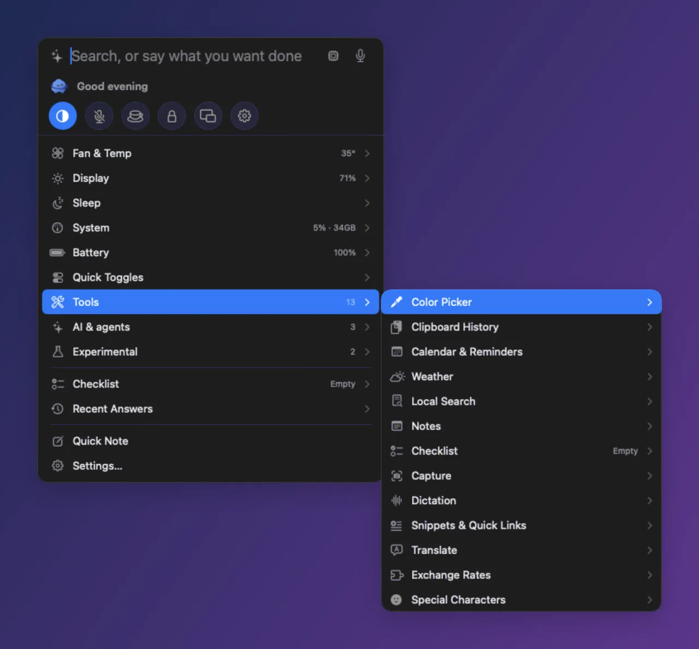
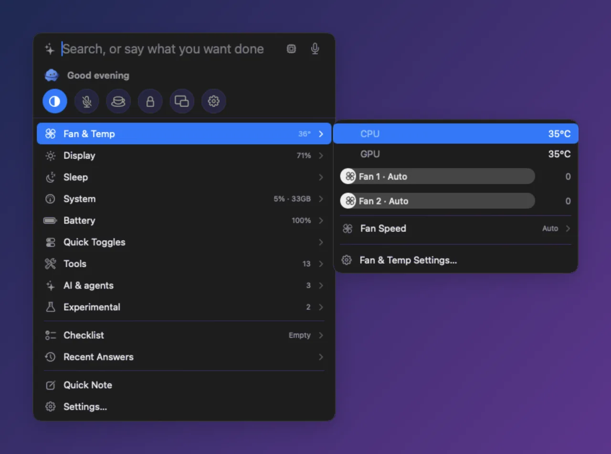
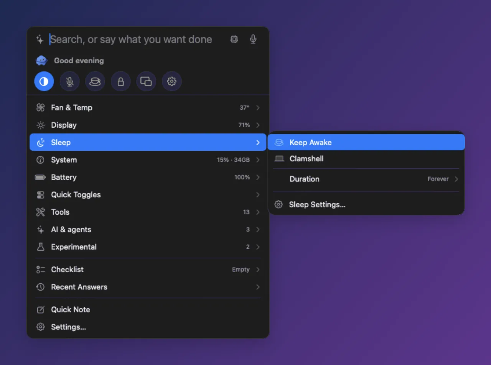
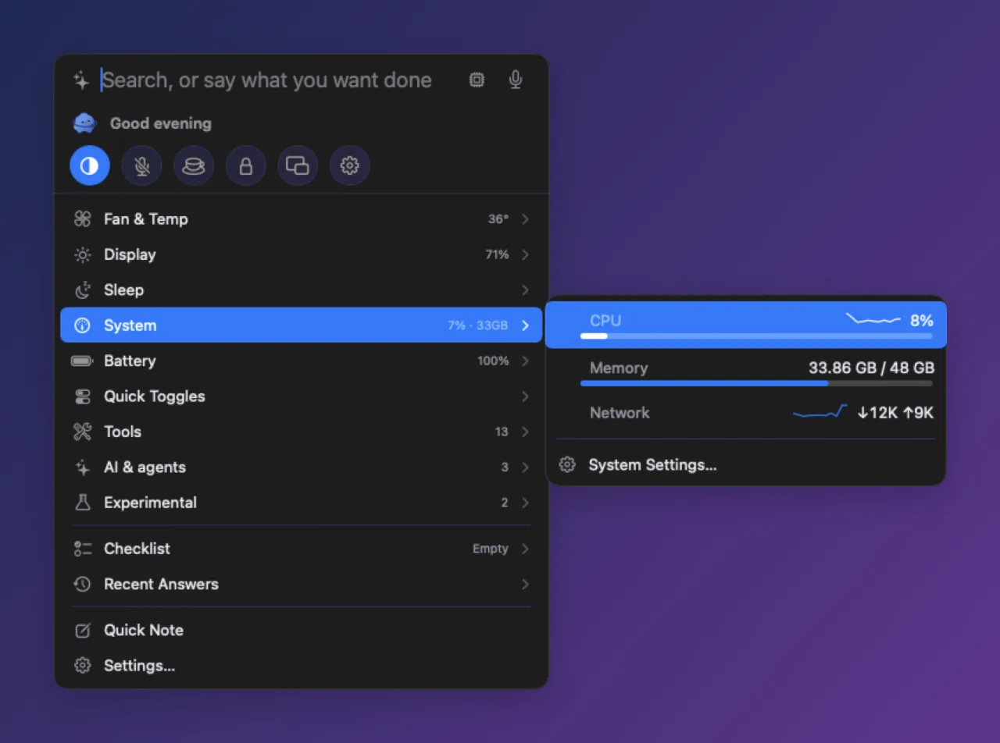

AI usage
Shows how much of your Claude Code and Codex 5-hour and weekly limits you've used, as bars — also in the menu bar and with warning colors.
claude usagecodex limitStill running a dozen menu bar apps?
Fans, brightness, key remapping, battery, keep-awake, clipboard, window snapping, capture — the jobs of a dozen apps in one free app, one ⌥Space away. Claude Code & Codex usage, agent sessions and Apple's on-device AI, right there too.
The jobs of twelve separate apps, now in one: Divee
If you work alongside AI on your Mac, the extra windows and apps you keep open for it fit into Divee too.
Shows how much of your Claude Code and Codex 5-hour and weekly limits you've used, as bars — also in the menu bar and with warning colors.
claude usagecodex limitTells you which open Claude Code or Codex session is waiting for approval or has a new reply, and lets you reply right from the panel.
Write what you want in a sentence and Divee runs the matching feature. Tries Apple's on-device model (macOS 26+), then Ollama — on your Mac first.
make the screen dimmerkeep my Mac awake for 30 minutesSentences no rule catches go to a tiny on-device classifier (24 KB) that picks the right card and marks it ✦ On-device.
switch to night modemute my microphoneApple's on-device translation (macOS 15+) and on-device speech recognition — your text and voice stay on your Mac.
안녕하세요 to Englishhold ⌃⌥Space and speakCloud models are used only if you've set up a server, and only when on-device can't handle it or you say “use the cloud” (answers show ☁︎). Anything hard to undo asks first.
Hover a row or press → and it slides out to the side, just like a Windows right-click menu — up to three levels deep.

It turns into a card before you press Return — computed on your Mac, no AI needed.
CPU and GPU temperatures and a slider per fan. Drag and release to put that fan in manual mode, or choose Auto · Max · Temperature curve.

✓ Keep Awake and ✓ Clamshell (stays on with the lid closed), for as long as you need: indefinitely · 30 min · 1 · 2 · 4 hours.

About 0.2% CPU and ~42 MB of memory while the panel is closed, about 1% CPU while it's open. The app is 13 MB.

Turn each module on or off in Settings › Features.
Karabiner-style key rules, made simple.
Built-in and external display brightness.
Charge, health, cycles, power.
Get back what you copied.
Snap windows to halves, quarters and thirds, Magnet-style.
Screenshots, text capture and recordings.
Hold a key and speak, anywhere.
Dark Mode, Mute Microphone, Lock Screen and more.
Add new features, looks and characters — no coding needed.
Data leaves your Mac only when you turn on a feature that needs it, and Settings › About lists exactly what's on.
Only for features you turn on, only to these destinations.
| Feature | What is sent | Where |
|---|---|---|
| Weather | City name | open-meteo.com |
| Web Search | Search query | Bing |
| AI Usage | Your usage lookup (Codex) | OpenAI servers |
| A remote AI backend you chose | Your sentence | The server you chose |
| Update check (once a day, can be off) | App version | GitHub |
| Send feedback (only when you submit) | What you wrote + Divee version, macOS version, chip | A GitHub issue, in your browser |
| Currency plugin (only when on) | A currency code | api.frankfurter.dev |
Divee asks only for the permissions the features you turn on need, and says why. The background helper for fan control and Clamshell is approved once in Login Items.
Yes. Divee is free to use.
macOS 14 Sonoma or later on an Apple Silicon Mac (M1 or later). A few features need newer macOS: Apple's on-device model needs macOS 26, and on-device translation needs macOS 15.
Not by default. The AI is local-first: Apple's on-device model, then Ollama, both on your Mac. It hands off to a server only if you've chosen one, and only when it's needed or you say “use the cloud” — those answers are marked ☁︎.
Only the features you turn on ask, and they say why — for example, Accessibility for key remap cards and Window Snap, or Screen Recording for Capture. Fan control and Clamshell use a background helper you approve once in System Settings › General › Login Items.
Divee checks once a day (you can turn it off in Settings › About). When a new version is out, a small dot appears on the menu bar mascot — nothing installs until you click Install.
If you used fan control or Clamshell, click Remove Helper in Settings › Fan & Temp first — it restores your fan and sleep settings. Then quit Divee and move it to the Trash.
Free · macOS 14+ · Apple Silicon · Apple-notarized